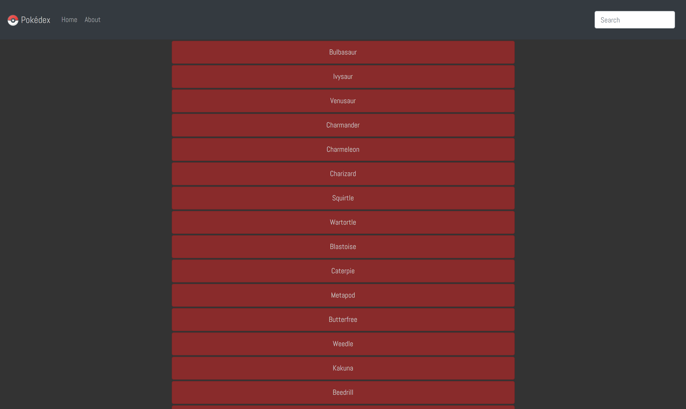

Work
Pokédex
This simple Web Application was built with HTML, CSS & JavaScript. It loads Pokémon data from an external API, and enables the viewing of data points in detail.
 Pokédex Github RepoPokédex Application
myFlix
This is the client-side for an application called myFlix based on its existing server-side code (REST API and database). This SPA uses the MERN stack and allows users to view information about movies, genres and directors. Users are able to register, add or remove movies from their favorites, and update their profile information.
 myFlix Github Repo
myFlix Github Repo
myFlix Application
Meet
A serverless, progressive web application (PWA) built with React using a test-driven development (TDD) technique. The application uses the Google Calendar API to fetch upcoming events.
 Meet Github Repo
Meet Github Repo
Meet Application